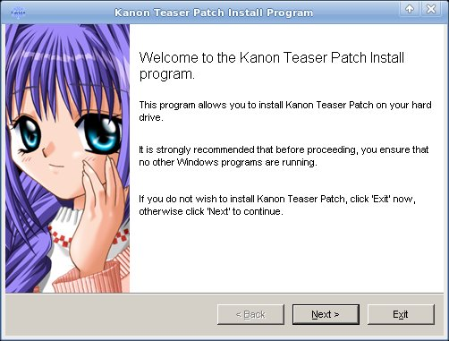
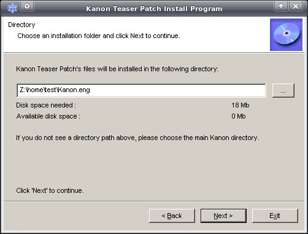
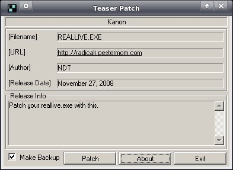

Installing the Kanon patch under Linux
WARNING: This guide describes installing an outdated teaser patch and will not help you install the final Kanon translation patch. It is kept for historical reasons. You can find the current guide here.
(Note: All commands are examples. Depending on your linux distribution, you may need to adjust paths, commands, et cetera.)
- Make sure you have wine installed. (We will need it to run the
Kanon English patch installer; not to play Kanon.)
$ sudo apt-get install wine
- Copy the files from your Kanon Standard Edition or
Kanon Standard Edition All Ages Version CD to your hard
drive in a new folder. For example:
$ cp -R /media/cdrom0/ ~/Kanon.eng
- The fine people at Non-directional Translations have created a teaser patch, with a full patch coming Real Soon Now. Download the installer from their website.
- Use wine to run the installer.
$ wine ~/Desktop/KanonTeaser.exeYou should see the first part of the installation wizard:
- Select the directory you copied the CD contents to:

- After finishing the installation, you will see the following dialog
window:
You do not need to do anything with this window and can safely click exit. This file translates strings inside the RealLive.exe interpreter. You'll be using
rlvmto play the patch, so just click Exit. - You should be able to play the NDT patched Kanon by running:
$ rlvm ~/Kanon.eng

Enjoy!